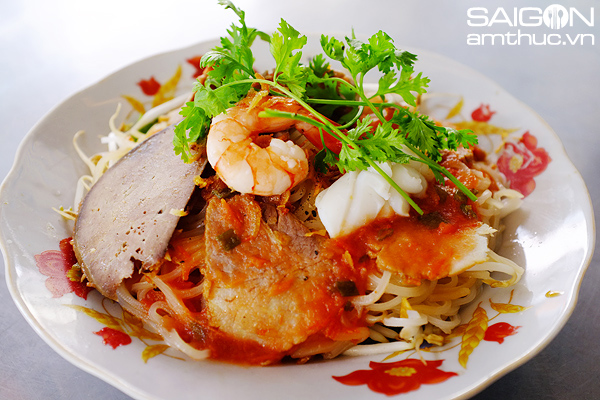

Thông tin về món ăn
Nguồn gốc
Xuất xứ từ làng bột gạo Sa Đéc nổi tiếng với nghề làm bột truyền thống hàng trăm năm. Sợi hủ tiếu ở đây có hương vị đặc trưng do được làm từ bột tươi tại địa phương, sử dụng nguồn nước đặc biệt giúp sợi hủ tiếu dai và thơm ngon.
Nguyên liệu chính
- Hủ tiếu: Sợi dai, mềm vừa.
- Thịt và hải sản: Thịt heo, tôm tươi, gan, trứng.
- Gia vị: Nước mắm, đường, tiêu, tỏi, ớt.
- Rau sống: Giá đỗ, rau húng, xà lách, hành lá, rau thơm.
Đặc điểm
- Hương vị: Dai mềm hủ tiếu, ngọt thịt, thơm rau sống, nước sốt đậm đà.
- Cách thưởng thức: Trộn đều hủ tiếu với nước sốt, ăn kèm rau sống.
- Trải nghiệm: Vị dai, mềm, béo, ngọt, thơm, hài hòa và tinh tế.